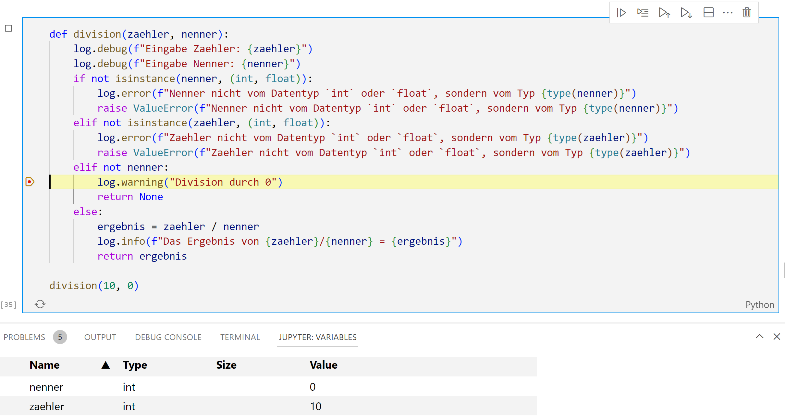

def bereinige(werte):
return [w for w in werte if w]
def berechne(werte):
return sum(werte) / len(werte)
def formatiere(mittel):
return f"Mittelwert: {mittel:.2f} m"
def verarbeite_daten(daten):
bereinigt = bereinige(daten)
ergebnis = berechne(bereinigt)
return formatiere(ergebnis)Debugging
Joern Ploennigs · AI4SC
cf. ‘The Treachery of Images’ by René Magritte
Debuggen in fünf Schritten
Falsche Ausgabe ohne Exception
Ein Modul wertet Pegelstände aus. Es läuft ohne Exception durch, der Mittelwert stimmt aber nicht.
- Erwartet: 0,75 m (Mittelwert aus 0,0; 1,2; 0,8 und 1,0 m)
- Ausgegeben: 1,00 m
- Kein Traceback als Startpunkt
- Ziel: Fehler reproduzieren, eingrenzen, lokalisieren und erneut verifizieren
Fünf Schritte vom falschen Ergebnis zur Ursache
Reproduzieren → Isolieren → Hypothese → Inspizieren → Beheben und erneut verifizieren
- 1. Reproduzieren
- Minimalen Fehler-Input finden
- 2. Isolieren
- Unit-Test für die Funktion schreiben
- 3. Hypothese
- Welche Annahme ist falsch?
- 4. Inspizieren
- Debugger, Schritt für Schritt
- 5. Beheben und erneut verifizieren
- Testen, ob der Fix vollständig ist
Zeller: Why Programs Fail, 2. Aufl., Morgan Kaufmann, 2009.
Schritt 1 – Reproduzieren
- Schreibe den kleinsten Input auf, der das Fehlverhalten auslöst
- Entferne alle Abhängigkeiten, die nicht zum Fehler beitragen
- Prüfe, ob der Fehler immer oder nur unter bestimmten Bedingungen auftritt
Ohne Exception (siehe Exceptions (S07)) beginnt die Suche beim falschen Ergebnis.
Merksatz
Einen Fehler, den du nicht reproduzieren kannst, kannst du nicht debuggen.
Schritt 2 – Isolieren
- Schreibe einen Unit-Test direkt für die verdächtige Funktion
- Prüfe die Stufen nacheinander vom Input zum Output, ohne das gesamte Programm
- Nur der Test für
bereinigeschlägt fehl
Wie Unit-Tests aufgebaut werden, zeigt Unit-Tests (S08).
Schritt 3 – Hypothese bilden
Frage dich:
- Was erwartest du als Ergebnis?
- Was gibt der Code tatsächlich zurück?
- Welche Annahme des Codes könnte falsch sein?
Erwartung: [0.0, 1.0]
Beobachtung: [1.0]Merksatz
Eine gute Hypothese beschreibt die Abweichung zwischen Erwartung und Beobachtung.
Schritt 3 – Typische falsche Annahmen
- Falscher Datentyp:
"1.2"statt1.2 - Falsche Parameterreihenfolge:
f(grenze, pegel) - Randfall nicht behandelt:
0.0(hier) - Off-by-one:
range(n)stattrange(n + 1)
In Bedingungen gelten None, 0, 0.0 und leere Sammlungen als falsch (siehe Verzweigung (S05)).
Schritt 4 – Ausführung inspizieren
- Setze einen Breakpoint (Haltepunkt) auf die erste Zeile der Einstiegsfunktion
- Steige mit Step Into (in die aufgerufene Funktion hinein) bis zur verdächtigen Funktion
- Beobachte, wo Erwartung und tatsächlicher Zustand auseinanderlaufen
Erst die Werkzeuge, dann der Walkthrough.
Merksatz
print() zeigt ausgewählte Werte. Der Debugger zeigt den Zustand am Haltepunkt: Variablen und Aufrufstapel.
print, logging und Debugger
print()-Debugging – Zustände sichtbar machen
Mit print() gibst du Eingaben, Warnungen und Ergebnisse direkt im Code aus.
- Sofort einsetzbar, ohne Konfiguration
- Ausgewählte Werte, nicht der vollständige Zustand
- Ausgabenflut, die den eigentlichen Fehler verdeckt
logging – Gefilterte Sichtbarkeit
Mit logging ordnest du Ausgaben Kategorien zu und filterst sie nach Level.
- Kategorisierte Ausgaben, leichter zu filtern
- Level dynamisch anpassbar, kein Code-Umbau nötig
- Erfordert initiale Konfiguration
Level, aufsteigend nach Schwere: DEBUG → INFO → WARNING → ERROR → CRITICAL
Ausgegeben wird ab dem eingestellten Level aufwärts.
Python-Dokumentation: Logging HOWTO, docs.python.org/3/howto/logging.html.
import logging
log = logging.getLogger("pegel")
log.handlers.clear() # keine doppelten Ausgaben bei erneutem Ausführen
sh = logging.StreamHandler()
log.addHandler(sh)
def bereinige(werte):
log.debug(f"Eingabe: {werte}")
ergebnis = [w for w in werte if w]
if len(ergebnis) < len(werte):
log.warning(f"{len(werte) - len(ergebnis)} von {len(werte)} Werten verworfen")
return ergebnisGrafischer Debugger – Voller Zustandsüberblick
Breakpoints – Ausführung gezielt unterbrechen:
- An einer bestimmten Zeile anhalten
- Bei einer bestimmten Exception stoppen
Was der Debugger zeigt:
Aktuelle Zeile (hervorgehoben)
Variablen im aktuellen Gültigkeitsbereich
Aufrufstapel (Call Stack)
Ganzer Zustand am Haltepunkt, ohne Code-Änderung
Anhalten kann zeitabhängiges Verhalten verändern
Python-Dokumentation: pdb, docs.python.org/3/library/pdb.html.

Walkthrough durch ein Modul
Module bestehen aus mehreren Funktionen
Code besteht oft aus mehreren Funktionen, die aufeinander aufbauen.
print()müsste in jeder Funktion ergänzt werden- Der Debugger folgt dem Aufrufstapel durch alle Ebenen
Breakpoint am Einstiegspunkt setzen
- Setze den ersten Breakpoint auf die erste Zeile der Einstiegsfunktion (
verarbeite_daten) - Rufe die Funktion mit dem minimalen Fehler-Input aus Schritt 1 auf
- Die Ausführung hält am Eingangszustand
Merksatz
Starte immer am Anfang der Aufrufkette, nicht tief im Code.
Durch Funktionsaufrufe schrittweise gehen
- Step Into (Hineinsteigen)
- Debugger steigt in die aufgerufene Funktion hinein
- Step Over (Ausführen)
- Debugger führt die Funktion aus, ohne hineinzusteigen
- Step Out (Heraussteigen)
- Debugger führt die Funktion zu Ende und kehrt zurück
Wann welches nutzen?
- Funktion verdächtig: Step Into
- Funktion bekannt korrekt: Step Over
- Zu tief geraten: Step Out
Im Beispiel: Step Into bei bereinige(daten).
Zustand auf jeder Ebene inspizieren
- Prüfe nach jedem Funktionsaufruf, ob der Rückgabewert der Erwartung entspricht
- Lies die lokalen Variablen im Variablenfenster
- Lies im Aufrufstapel (Call Stack), in welcher Funktion du stehst
- Prüfe bei abweichendem Rückgabewert die Hypothese gezielt
Merksatz
Der grafische Debugger zeigt für Module mit mehreren Funktionen den Zustand jeder Ebene, ohne Code-Änderungen wie bei print().
Schritt 5 – Beheben und erneut verifizieren
- Korrigiere nur die identifizierte Fehlerursache (minimaler Fix)
- Führe den Unit-Test aus Schritt 2 erneut aus
- Randfall
[None]: Division durch null, offen bis Exceptions (S07)
Agentic Workflow
Debugging ist der Verifikationsschritt auf Ausführungsebene im agentischen Zyklus:
Prompt → Generieren → Verstehen → Verifizieren → Iterieren
Referenzen
Python Software Foundation Logging HOWTO. https://docs.python.org/3/howto/logging.html.
Python Software Foundation pdb: The Python Debugger. https://docs.python.org/3/library/pdb.html.
Zeller, A. (2009). Why Programs Fail: A Guide to Systematic Debugging. Morgan Kaufmann.
Questions

Ingenieurs-
Informatik